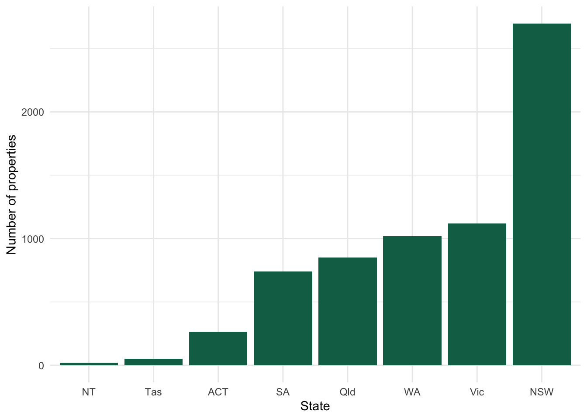
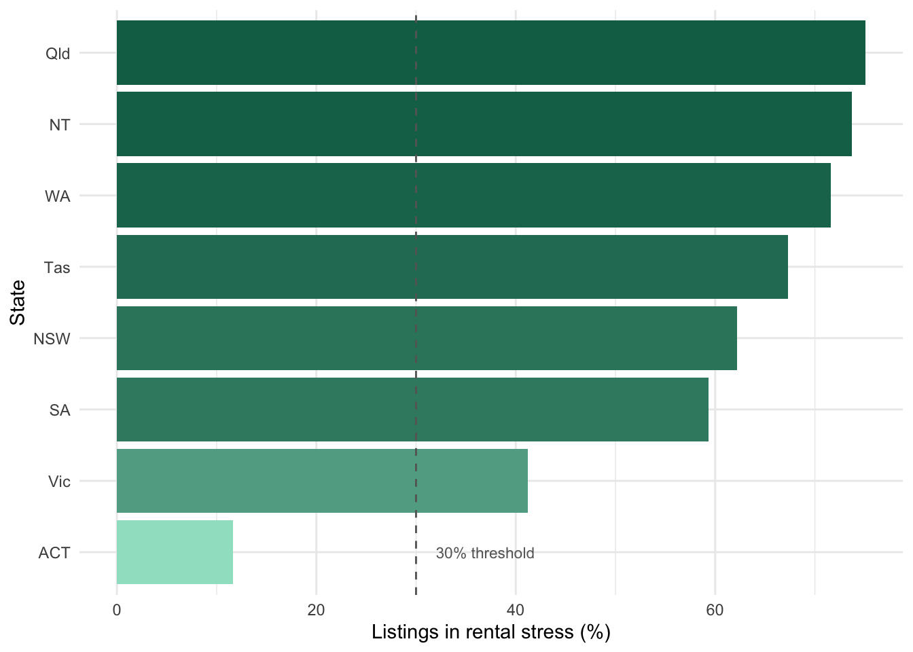

| Property type | Number of properties | Percentage (%) |
|---|---|---|
| house | 4089 | 60.4 |
| apartment | 1369 | 20.2 |
| unit | 761 | 11.2 |
| townhouse | 142 | 2.1 |
| duplex/semi-detached | 134 | 2.0 |
| studio | 104 | 1.5 |
| flat | 85 | 1.3 |
| other | 33 | 0.5 |
| villa | 25 | 0.4 |
| acreage/semi-rural | 17 | 0.3 |
| terrace | 7 | 0.1 |
Analysis of Rental Stress Across Australian Regions and Dwelling Types in 2026
ETC5513 – Assignment3
Executive summary
Australia’s rental market faces significant affordability pressures in 2026, with rising rents outpacing household incomes across most states and dwelling types. This report analyses the Australian Rental Market Data 2026 dataset (Karunarathna 2026), comprising 6,766 residential rental listings, to examine rental stress using the standard 30% income-to-rent benchmark (Australian Institute of Health and Welfare 2025). Queensland recorded the highest rental stress rate at 75.1%, while the ACT recorded the lowest at 11.7%, demonstrating that household income is a stronger determinant of affordability than rent levels alone. Across dwelling types, acreage and semi-rural properties were the least affordable (median rent AUD 970/week), while studios remained the most accessible option (median rent AUD 430/week).
Introduction
Australia’s rental market has faced sustained affordability challenges in recent years, driven by population growth, low vacancy rates, and rising construction costs. These pressures have pushed weekly rents beyond the reach of many low- to middle-income households across both metropolitan and regional areas. Understanding how rental costs vary across states and dwelling types is therefore critical for informing housing policy and supporting renters navigating the current market. This report investigates rental affordability across Australia using the Australian Rental Market Data 2026 dataset obtained from Kaggle (Karunarathna 2026). The dataset captures weekly rental prices, dwelling characteristics, and geographic attributes for 6,766 residential listings across all states and territories. Rental stress is assessed using the standard 30% income-to-rent benchmark (Australian Institute of Health and Welfare 2025), applied relative to each state’s median weekly household income. This income-adjusted approach enables more meaningful affordability comparisons across regions with differing cost-of-living profiles. The primary aim of this analysis is to identify where and in what dwelling types rental stress is most acute in Australia in 2026. The Methodology section outlines the dataset and cleaning procedures; the Results section presents key visualisations and findings; and the Discussion, Conclusion and Recommendations section interprets results and offers evidence-based policy directions.
Methodology
Before analysis, the dataset was reviewed for missing values, duplicate observations, and variable suitability. One duplicated observation was identified and removed. Missing values occurred only in variables outside the scope of this study and were therefore not treated. Variables unrelated to the research objective, including listing text and detailed address information, were excluded from the analysis. Rental stress was assessed using the standard housing affordability benchmark, where a property was classified as being in rental stress if weekly rent exceeded 30% of the median weekly household income for the corresponding state (Australian Institute of Health and Welfare 2025).
Dataset Description
The cleaned dataset contains 6766 observations and 9 variables. The retained variables include numeric measures describing rental price and dwelling characteristics (price_display, bedrooms, bathrooms, and parking_spaces) and categorical variables describing location and dwelling category (state, locality, suburb, and propertyType). These variables provide the basis for examining rental stress across Australian regions and dwelling types in 2026.
Dataset Summary
Table 1 summarises the distribution of dwelling types represented in the Australian rental dataset for 2026. Houses accounted for the largest share of observations (4,089 properties; 60.4%), followed by apartments (1,369 properties; 20.2%) and units (761 properties; 11.2%). Together, these dwelling types comprised over 90% of all rental listings, indicating that the dataset primarily reflects conventional residential dwellings.
In addition to dwelling type composition, Figure 1 shows the distribution of rental properties across Australia in 2026. Most observations were from New South Wales, followed by Victoria and Western Australia, indicating broad geographic coverage of the Australian rental market.
The cleaned dataset and descriptive summaries provide the foundation for evaluating rental stress across Australian regions and dwelling types in 2026.

Results
Rental stress is defined here as weekly rent exceeding 30% of the median weekly household income for each state, following the standard affordability benchmark (Australian Institute of Health and Welfare 2025). Across the full dataset, 59.5% of listings meet this threshold, indicating that the majority of available rentals in 2026 are unaffordable for a median-income household.
Figure 2 shows the proportion of listings classified as rental stress by state. Queensland recorded the highest stress rate (75.1%), followed by Western Australia (71.6%) and Tasmania (67.3%). Despite having the highest median weekly rent, the Australian Capital Territory had the lowest stress rate (11.7%), reflecting its substantially higher median household income relative to other states. New South Wales, while recording a moderate stress rate of 62.2%, had the largest absolute number of stressed listings (1,678 properties) due to its volume of listings.

Rental stress by dwelling type
Table 2 summarises the rental stress rate and median weekly rent for each dwelling type. Acreage and semi-rural properties recorded the highest stress rate (88.2%) and the highest median rent ($970/wk), making them the least affordable dwelling category. Houses (65.2%) and apartments (63.1%) followed, representing the most common dwelling types in the dataset. Studios recorded the lowest stress rate (11.5%) and the lowest median rent ($430/wk), making them the most accessible option for renters on median incomes.
| Property type | Number of listings | Median rent ($/wk) | Stress rate (%) |
|---|---|---|---|
| acreage/semi-rural | 17 | 970 | 88.2 |
| terrace | 7 | 750 | 71.4 |
| townhouse | 142 | 700 | 65.5 |
| house | 4089 | 695 | 65.2 |
| apartment | 1369 | 700 | 63.1 |
| duplex/semi-detached | 134 | 650 | 51.5 |
| villa | 25 | 590 | 44.0 |
| unit | 761 | 550 | 36.5 |
| other | 33 | 540 | 21.2 |
| flat | 85 | 510 | 11.8 |
| studio | 104 | 430 | 11.5 |
Discussion
The findings reveal a rental market under considerable strain. With nearly 60% of all listings exceeding the 30% affordability threshold, rental stress reflects a structural mismatch between housing costs and household incomes across most of Australia. Queensland’s stress rate of 75.1% is particularly striking, surpassing even New South Wales despite NSW carrying the largest absolute number of unaffordable listings (1,678 properties). This divergence suggests that stress rates and raw listing volumes tell different stories — Queensland renters face a more acute affordability problem proportionally, while NSW presents the greatest overall scale of housing pressure (Australian Institute of Health and Welfare 2025).
The ACT stands out as a clear outlier. Despite recording the highest median rent among all states, its stress rate of just 11.7% demonstrates that rent levels alone do not determine affordability — household income plays an equally decisive role. Because the 30% threshold is applied relative to each state’s median weekly income, the ACT’s substantially higher income base shields most renters from stress classification, even at elevated rent levels. This reinforces the importance of income-adjusted affordability measures over simple rent comparisons (Australian Institute of Health and Welfare 2025).
At the dwelling level, the results reveal a clear affordability gradient. Acreage and semi-rural properties recorded the highest stress rate (88.2%) and the highest median rent ($970/week), making them the least accessible category for median-income renters. Houses (65.2%) and apartments (63.1%) also recorded high stress rates, indicating that affordability pressure is concentrated in the most common dwelling types. Studios recorded the lowest stress rate (11.5%) and the lowest median rent ($430/week), making them the most accessible option in the dataset. As this study is limited to listed rental properties, conclusions about broader supply availability cannot be drawn from these figures alone.
Conclusion
This study examined rental affordability across Australia in 2026 using a dataset of residential listings, applying the standard 30% income-to-rent benchmark to assess rental stress at both the state and dwelling-type level (Australian Institute of Health and Welfare 2025).
The results paint a sobering picture. Nearly three in five rental listings nationally exceed the affordability threshold, confirming that rental stress is the norm rather than the exception in the current Australian market. At the state level, Queensland, Western Australia, and Tasmania emerged as the most financially pressured regions — not necessarily because their rents are the highest, but because their household incomes are comparatively lower, making even moderate rents unaffordable for median-earning households (Australian Bureau of Statistics 2024). The ACT’s low stress rate (11.7%) despite its high median rent reinforces this point clearly: income is the more powerful determinant of affordability than rent price alone.
At the dwelling level, the findings reveal a clear affordability gradient. Acreage and semi-rural properties are the least accessible, with an 88.2% stress rate and a median rent of $970 per week — placing them well beyond reach for most renters. Conventional dwellings such as houses and apartments, which make up the bulk of the market, also recorded high stress rates (65.2% and 63.1% respectively), suggesting that even mainstream housing options are increasingly unaffordable. Studios stand out as the most accessible dwelling type, with a stress rate of just 11.5% and a median rent of $430 per week, though their small share of total listings limits their impact as a broad solution.
Taken together, these findings indicate that rental unaffordability in Australia in 2026 is both widespread and structurally entrenched, varying meaningfully by both geography and dwelling type.
Recommendations
Based on these findings, several policy directions warrant consideration.
First, state governments in Queensland, Western Australia, and Tasmania should be prioritised for targeted rental relief measures. Given that stress in these states is driven largely by the income–rent gap rather than extreme rent levels alone, income-side interventions — such as expanded Commonwealth Rent Assistance payments calibrated to state-level median incomes — are likely to be more effective than rent caps applied uniformly at the national level (Grattan Institute 2023).
Second, increasing the supply of smaller, more affordable dwelling types — particularly studios and one-bedroom apartments — should be a planning priority in high-stress states. The data clearly show studios offer the most accessible entry point into the rental market, yet they represent a small fraction of total listings. Rezoning and density incentives in well-connected urban areas could help grow this segment of supply (Real Estate Institute of Australia 2024).
Third, the affordability crisis in conventional housing categories (houses and apartments) demands attention given their dominance in the dataset. Policy levers such as build-to-rent schemes, social housing investment, and inclusionary zoning requirements for new developments could help moderate stress rates in these high-volume categories over the medium term (Grattan Institute 2023).
Finally, this study highlights the limitations of applying a single national income benchmark to assess rental stress. Future research should incorporate suburb-level or postcode-level income data — available through the ABS — to produce more granular affordability assessments (Australian Bureau of Statistics 2024). Integrating vacancy rates, rental growth trends, and household composition data would further strengthen the analytical basis for evidence-based housing policy in Australia.
References
Australian Bureau of Statistics. 2024. Housing Occupancy and Costs. https://www.abs.gov.au/statistics/people/housing/housing-occupancy-and-costs.
Australian Institute of Health and Welfare. 2025. Housing Assistance in Australia: Financial Assistance. https://www.aihw.gov.au/reports/housing-assistance/housing-assistance-in-australia/contents/financial-assistance.
Grattan Institute. 2023. Rental Stress and Housing Policy in Australia. https://grattan.edu.au.
Karunarathna, Kanchana. 2026. Australian Rental Market Data 2026. Kaggle. https://www.kaggle.com/ds/9582256.
Real Estate Institute of Australia. 2024. Housing Affordability Report. https://www.reia.com.au.